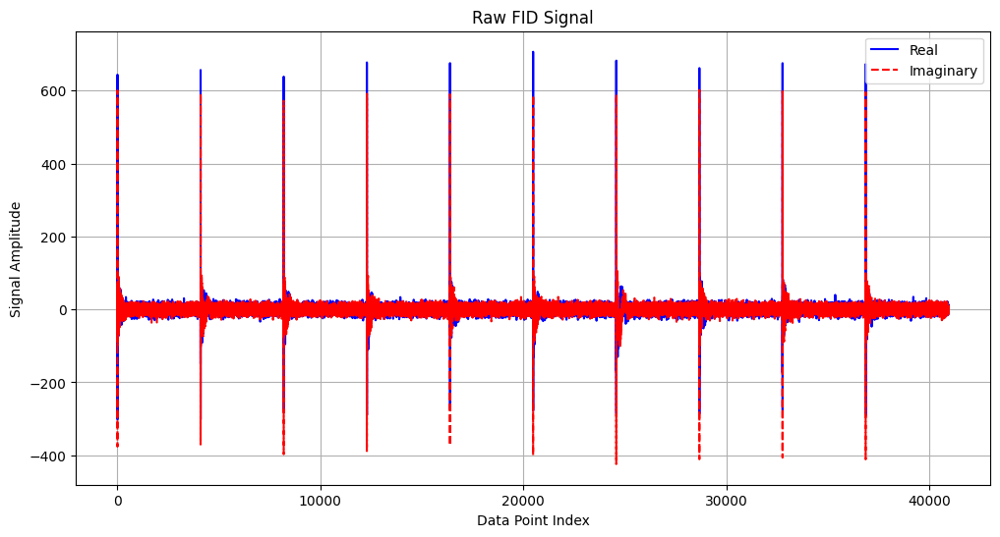
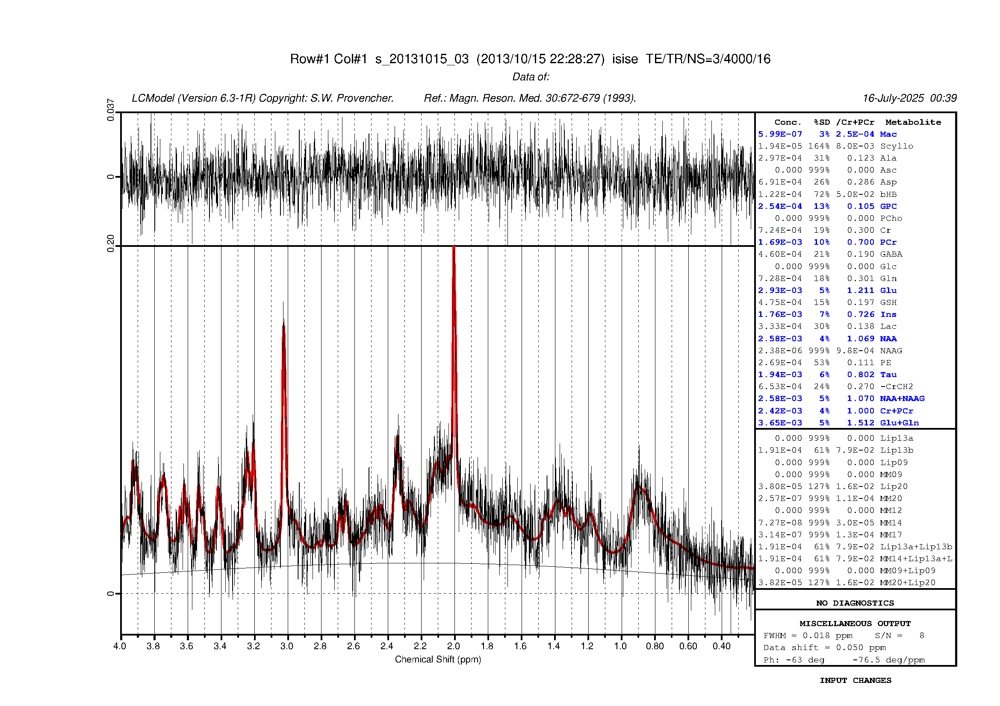
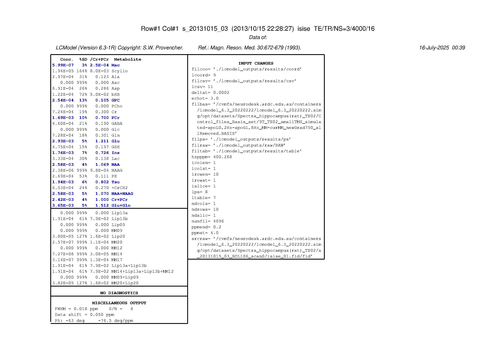

MR Spectroscopy with LCModel#
Analyzing MR Spectra from Rat Hippocampus#
Author: Monika Doerig
Citation:#
Tools included in this workflow#
LCModel:
Provencher S. W. (1993). Estimation of metabolite concentrations from localized in vivo proton NMR spectra. Magnetic resonance in medicine, 30(6), 672–679. https://doi.org/10.1002/mrm.1910300604
Dataset#
Dunja Simicic, & Cristina Cudalbu. (2020). MR Spectra from rat hippocampus with LCModel quantification and the corresponding basis set [Data set]. In Magn Reson Med (Version Part1, Bd. 86, Nummer 5, S. 2384–2401). Zenodo. https://doi.org/10.5281/zenodo.3904443
Simicic, D., Rackayova, V., Xin, L., Tkáč, I., Borbath, T., Starcuk, Z., Jr, Starcukova, J., Lanz, B., & Cudalbu, C. (2021). In vivo macromolecule signals in rat brain 1 H-MR spectra at 9.4T: Parametrization, spline baseline estimation, and T2 relaxation times. Magnetic resonance in medicine, 86(5), 2384–2401. https://doi.org/10.1002/mrm.28910
# output cpu information
!cat /proc/cpuinfo | grep 'vendor' | uniq
!cat /proc/cpuinfo | grep 'model name' | uniq
vendor_id : AuthenticAMD
model name : AMD EPYC 7763 64-Core Processor
Load software tools and import python libraries#
import module
await module.load('lcmodel/6.3')
await module.list()
['Lmod',
'Warning:',
'The',
'environment',
'MODULEPATH',
'has',
'been',
'changed',
'in',
'unexpected',
'ways.',
'Lmod',
'is',
'unable',
'to',
'use',
'given',
'MODULEPATH.',
'It',
'is',
'using:',
'"/cvmfs/neurodesk.ardc.edu.au/neurodesk-modules/functional_imaging:/cvmfs/neurodesk.ardc.edu.au/neurodesk-modules/rodent_imaging:/cvmfs/neurodesk.ardc.edu.au/neurodesk-modules/image_registration:/cvmfs/neurodesk.ardc.edu.au/neurodesk-modules/structural_imaging:/cvmfs/neurodesk.ardc.edu.au/neurodesk-modules/image_segmentation:/cvmfs/neurodesk.ardc.edu.au/neurodesk-modules/quantitative_imaging:/cvmfs/neurodesk.ardc.edu.au/neurodesk-modules/workflows:/cvmfs/neurodesk.ardc.edu.au/neurodesk-modules/hippocampus:/cvmfs/neurodesk.ardc.edu.au/neurodesk-modules/image_reconstruction:/cvmfs/neurodesk.ardc.edu.au/neurodesk-modules/data_organisation:/cvmfs/neurodesk.ardc.edu.au/neurodesk-modules/electrophysiology:/cvmfs/neurodesk.ardc.edu.au/neurodesk-modules/phase_processing:/cvmfs/neurodesk.ardc.edu.au/neurodesk-modules/programming:/cvmfs/neurodesk.ardc.edu.au/neurodesk-modules/machine_learning:/cvmfs/neurodesk.ardc.edu.au/neurodesk-modules/diffusion_imaging:/cvmfs/neurodesk.ardc.edu.au/neurodesk-modules/body:/cvmfs/neurodesk.ardc.edu.au/neurodesk-modules/visualization:/cvmfs/neurodesk.ardc.edu.au/neurodesk-modules/spectroscopy:/cvmfs/neurodesk.ardc.edu.au/neurodesk-modules/quality_control:/cvmfs/neurodesk.ardc.edu.au/neurodesk-modules/statistics:/cvmfs/neurodesk.ardc.edu.au/neurodesk-modules/shape_analysis:/cvmfs/neurodesk.ardc.edu.au/neurodesk-modules/spine:/cvmfs/neurodesk.ardc.edu.au/neurodesk-modules/molecular_biology:/cvmfs/neurodesk.ardc.edu.au/neurodesk-modules/bids_apps:/cvmfs/neurodesk.ardc.edu.au/neurodesk-modules/cryo_EM:/cvmfs/neurodesk.ardc.edu.au/neurodesk-modules/other::".',
'Please',
'use',
'"module',
'use',
'to',
'change',
'MODULEPATH',
'instead.',
'lcmodel/6.3']
%%capture
!pip install nibabel numpy
The command below updates the package list and installs Ghostscript, which provides the ps2pdf utility for converting LCModel’s .ps output into a PDF, as well as tools to convert the .ps file into PNG images for easier inline viewing in notebooks and web pages.
!sudo apt update -qq && sudo apt install ghostscript -y -qq
78 packages can be upgraded. Run 'apt list --upgradable' to see them.
The following additional packages will be installed:
fonts-droid-fallback fonts-noto-mono fonts-urw-base35 libgs9 libgs9-common
libidn12 libijs-0.35 libjbig2dec0 poppler-data
Suggested packages:
fonts-noto fonts-freefont-otf | fonts-freefont-ttf fonts-texgyre
ghostscript-x poppler-utils fonts-japanese-mincho | fonts-ipafont-mincho
fonts-japanese-gothic | fonts-ipafont-gothic fonts-arphic-ukai
fonts-arphic-uming fonts-nanum
The following NEW packages will be installed:
fonts-droid-fallback fonts-noto-mono fonts-urw-base35 ghostscript libgs9
libgs9-common libidn12 libijs-0.35 libjbig2dec0 poppler-data
0 upgraded, 10 newly installed, 0 to remove and 78 not upgraded.
Need to get 16.7 MB of archives.
After this operation, 63.0 MB of additional disk space will be used.
78
Selecting previously unselected package fonts-droid-fallback.
(Reading database ... 80%
(Reading database ... 90%
(Reading database ... 276981 files and directories currently installed.)
Preparing to unpack .../0-fonts-droid-fallback_1%3a6.0.1r16-1.1build1_all.deb ...
7Progress: [ 0%] [..........................................................] 87Progress: [ 2%] [#.........................................................] 8Unpacking fonts-droid-fallback (1:6.0.1r16-1.1build1) ...
7Progress: [ 5%] [##........................................................] 8
Selecting previously unselected package poppler-data.
Preparing to unpack .../1-poppler-data_0.4.11-1_all.deb ...
7Progress: [ 7%] [####......................................................] 8Unpacking poppler-data (0.4.11-1) ...
7Progress: [ 10%] [#####.....................................................] 8Selecting previously unselected package fonts-noto-mono.
Preparing to unpack .../2-fonts-noto-mono_20201225-1build1_all.deb ...
7Progress: [ 12%] [#######...................................................] 8Unpacking fonts-noto-mono (20201225-1build1) ...
7Progress: [ 15%] [########..................................................] 8Selecting previously unselected package fonts-urw-base35.
Preparing to unpack .../3-fonts-urw-base35_20200910-1_all.deb ...
7Progress: [ 17%] [#########.................................................] 8
Unpacking fonts-urw-base35 (20200910-1) ...
7Progress: [ 20%] [###########...............................................] 8Selecting previously unselected package libgs9-common.
Preparing to unpack .../4-libgs9-common_9.55.0~dfsg1-0ubuntu5.12_all.deb ...
7Progress: [ 22%] [############..............................................] 8Unpacking libgs9-common (9.55.0~dfsg1-0ubuntu5.12) ...
7Progress: [ 24%] [##############............................................] 8Selecting previously unselected package libidn12:amd64.
Preparing to unpack .../5-libidn12_1.38-4ubuntu1_amd64.deb ...
7Progress: [ 27%] [###############...........................................] 8Unpacking libidn12:amd64 (1.38-4ubuntu1) ...
7Progress: [ 29%] [################..........................................] 8
Selecting previously unselected package libijs-0.35:amd64.
Preparing to unpack .../6-libijs-0.35_0.35-15build2_amd64.deb ...
7Progress: [ 32%] [##################........................................] 8Unpacking libijs-0.35:amd64 (0.35-15build2) ...
7Progress: [ 34%] [###################.......................................] 8Selecting previously unselected package libjbig2dec0:amd64.
Preparing to unpack .../7-libjbig2dec0_0.19-3build2_amd64.deb ...
7Progress: [ 37%] [#####################.....................................] 8Unpacking libjbig2dec0:amd64 (0.19-3build2) ...
7Progress: [ 39%] [######################....................................] 8Selecting previously unselected package libgs9:amd64.
Preparing to unpack .../8-libgs9_9.55.0~dfsg1-0ubuntu5.12_amd64.deb ...
7Progress: [ 41%] [########################..................................] 8Unpacking libgs9:amd64 (9.55.0~dfsg1-0ubuntu5.12) ...
7Progress: [ 44%] [#########################.................................] 8Selecting previously unselected package ghostscript.
Preparing to unpack .../9-ghostscript_9.55.0~dfsg1-0ubuntu5.12_amd64.deb ...
7Progress: [ 46%] [##########################................................] 8Unpacking ghostscript (9.55.0~dfsg1-0ubuntu5.12) ...
7Progress: [ 49%] [############################..............................] 8
Setting up fonts-noto-mono (20201225-1build1) ...
7Progress: [ 51%] [#############################.............................] 87Progress: [ 54%] [###############################...........................] 8Setting up libijs-0.35:amd64 (0.35-15build2) ...
7Progress: [ 56%] [################################..........................] 87Progress: [ 59%] [#################################.........................] 8Setting up fonts-urw-base35 (20200910-1) ...
7Progress: [ 61%] [###################################.......................] 8
7Progress: [ 63%] [####################################......................] 8Setting up poppler-data (0.4.11-1) ...
7Progress: [ 66%] [######################################....................] 87Progress: [ 68%] [#######################################...................] 8Setting up libjbig2dec0:amd64 (0.19-3build2) ...
7Progress: [ 71%] [#########################################.................] 87Progress: [ 73%] [##########################################................] 8Setting up libidn12:amd64 (1.38-4ubuntu1) ...
7Progress: [ 76%] [###########################################...............] 87Progress: [ 78%] [#############################################.............] 8Setting up fonts-droid-fallback (1:6.0.1r16-1.1build1) ...
7Progress: [ 80%] [##############################################............] 87Progress: [ 83%] [################################################..........] 8Setting up libgs9-common (9.55.0~dfsg1-0ubuntu5.12) ...
7Progress: [ 85%] [#################################################.........] 87Progress: [ 88%] [##################################################........] 8Setting up libgs9:amd64 (9.55.0~dfsg1-0ubuntu5.12) ...
7Progress: [ 90%] [####################################################......] 87Progress: [ 93%] [#####################################################.....] 8Setting up ghostscript (9.55.0~dfsg1-0ubuntu5.12) ...
7Progress: [ 95%] [#######################################################...] 87Progress: [ 98%] [########################################################..] 8Processing triggers for fontconfig (2.13.1-4.2ubuntu5) ...
Processing triggers for libc-bin (2.35-0ubuntu3.10) ...
Processing triggers for man-db (2.10.2-1) ...
78
NEEDRESTART-VER: 3.5
NEEDRESTART-KCUR: 6.8.0-1030-azure
NEEDRESTART-KEXP: 6.8.0-1030-azure
NEEDRESTART-KSTA: 1
NEEDRESTART-SVC: hosted-compute-agent.service
# Import the necessary libraries
import matplotlib.pyplot as plt
import os
import subprocess
from pathlib import Path
import nibabel as nib
import numpy as np
from IPython.display import IFrame, Image, display
import re
import glob
Get example data from the container#
This section locates and verifies access to the example dataset bundled inside the LCModel container. It:
Retrieves the path to the lcmodel executable to infer the container base directory.
Constructs full paths to the example Varian fid file and BASIS set directory located within the container.
Uses
globto select the.BASISfile (expects exactly one).Verifies that the
fidfile and.BASISfile exist and prints their status and raises an error if any are missing.
# === Get path to lcmodel executable
lcmodel_path = subprocess.check_output("which lcmodel", shell=True, text=True).strip()
# === Extract container base and image path
container_base = os.path.dirname(lcmodel_path) # e.g., .../lcmodel_6.3_20220222
container_id = os.path.basename(container_base) # e.g., lcmodel_6.3_20220222
simg_path = os.path.join(container_base, f"{container_id}.simg")
# === Construct dataset paths inside
fid_path = os.path.join(
simg_path,
"opt/datasets/Spectra_hippocampus(rat)_TE02/s_20131015_03_BDL106_scan0/isise_01.fid/fid"
)
basis_path = os.path.join(
simg_path,
"opt/datasets/Spectra_hippocampus(rat)_TE02/Control_files_Basis_set"
)
# Get single BASIS file (will raise error if not exactly one)
basis_files = glob.glob(os.path.join(basis_path, "*.BASIS"))
basis_file = basis_files[0]
# === Check existence of the paths
fid_exists = Path(fid_path).exists()
basis_dir_exists = Path(basis_path).exists()
basis_file_exists = Path(basis_file).exists()
# === Report status
print(f"FID path: {fid_path}")
print(f"BASIS file: {basis_file}")
print(f"FID exists? {'✅' if fid_exists else '❌'}")
print(f"BASIS dir exists? {'✅' if basis_dir_exists else '❌'}")
print(f"BASIS file exists? {'✅' if basis_file_exists else '❌'}")
# Raise error or fallback if paths missing
if not fid_exists or not basis_file_exists:
raise FileNotFoundError("One or more required dataset paths could not be found.")
FID path: /cvmfs/neurodesk.ardc.edu.au/containers/lcmodel_6.3_20220222/lcmodel_6.3_20220222.simg/opt/datasets/Spectra_hippocampus(rat)_TE02/s_20131015_03_BDL106_scan0/isise_01.fid/fid
BASIS file: /cvmfs/neurodesk.ardc.edu.au/containers/lcmodel_6.3_20220222/lcmodel_6.3_20220222.simg/opt/datasets/Spectra_hippocampus(rat)_TE02/Control_files_Basis_set/9T_TE02_smallTMS_simulated-apoL0,2Hz-apoG1,8Hz_MM-ourMM_newGrad750_allRemoved.BASIS
FID exists? ✅
BASIS dir exists? ✅
BASIS file exists? ✅
Set up LCModel configuration files#
This script sets up the LCModel environment by copying the hidden .lcmodel directory (containing all required binaries and configuration files) into your home folder. If the .lcmodel directory already exists, the script normally prompts whether to overwrite it — however, in a notebook environment, this prompt is not interactive. To avoid errors, the script can be conditionally run only if .lcmodel does not already exist.
if not os.path.exists(os.path.expanduser("~/.lcmodel")):
!setup_lcmodel.sh
else:
print("~/.lcmodel already exists — skipping setup.")
Setting up lcmodel...
done.
Convert Varian fid file to LCModel-compatible .RAW#
This step uses the bin2raw utility to convert the Varian fid file and its associated procpar file into a .RAW file that LCModel can process.
In addition to the .RAW file, two auxiliary files are also generated: cpStart and extraInfo. These are typically used by LCMgui to autofill settings, but in this notebook-based workflow, we’ll manually extract relevant information from extraInfo and .RAW to generate a custom control (.CONTROL) file for LCModel.
Details & Requirements for bin2raw:
The input data must be named fid, and the corresponding procpar file must be in the same directory.
bin2raw assumes a voxel volume of 1.0, so water-scaling will only be accurate if the suppressed and unsuppressed water scans were acquired with identical voxel sizes.
The script depends on bin2asc, which must be located in ~/.lcmodel/varian/. First, let’s check if the files are there:
! ls /home/jovyan/.lcmodel/varian
ls: cannot access '/home/jovyan/.lcmodel/varian': No such file or directory
Run bin2raw to convert the Varian fid file into an LCModel .RAW file. The output is saved in a subdirectory (./lcmodel_outputs/raw/) that is visible in JupyterLab for inspection and further use.
%%bash -s "$fid_path"
DATA_FILE="$1"
LCM_DIR="./lcmodel_outputs/"
MET_H2O="raw"
mkdir -p "${LCM_DIR}${MET_H2O}"
/home/jovyan/.lcmodel/varian/bin2raw $DATA_FILE $LCM_DIR $MET_H2O
bash: line 7: /home/jovyan/.lcmodel/varian/bin2raw: No such file or directory
---------------------------------------------------------------------------
CalledProcessError Traceback (most recent call last)
Cell In[9], line 1
----> 1 get_ipython().run_cell_magic('bash', '-s "$fid_path"', 'DATA_FILE="$1"\nLCM_DIR="./lcmodel_outputs/"\nMET_H2O="raw"\n\nmkdir -p "${LCM_DIR}${MET_H2O}"\n \n/home/jovyan/.lcmodel/varian/bin2raw $DATA_FILE $LCM_DIR $MET_H2O\n')
File ~/.local/lib/python3.10/site-packages/IPython/core/interactiveshell.py:2543, in InteractiveShell.run_cell_magic(self, magic_name, line, cell)
2541 with self.builtin_trap:
2542 args = (magic_arg_s, cell)
-> 2543 result = fn(*args, **kwargs)
2545 # The code below prevents the output from being displayed
2546 # when using magics with decorator @output_can_be_silenced
2547 # when the last Python token in the expression is a ';'.
2548 if getattr(fn, magic.MAGIC_OUTPUT_CAN_BE_SILENCED, False):
File ~/.local/lib/python3.10/site-packages/IPython/core/magics/script.py:159, in ScriptMagics._make_script_magic.<locals>.named_script_magic(line, cell)
157 else:
158 line = script
--> 159 return self.shebang(line, cell)
File ~/.local/lib/python3.10/site-packages/IPython/core/magics/script.py:336, in ScriptMagics.shebang(self, line, cell)
331 if args.raise_error and p.returncode != 0:
332 # If we get here and p.returncode is still None, we must have
333 # killed it but not yet seen its return code. We don't wait for it,
334 # in case it's stuck in uninterruptible sleep. -9 = SIGKILL
335 rc = p.returncode or -9
--> 336 raise CalledProcessError(rc, cell)
CalledProcessError: Command 'b'DATA_FILE="$1"\nLCM_DIR="./lcmodel_outputs/"\nMET_H2O="raw"\n\nmkdir -p "${LCM_DIR}${MET_H2O}"\n \n/home/jovyan/.lcmodel/varian/bin2raw $DATA_FILE $LCM_DIR $MET_H2O\n'' returned non-zero exit status 127.
Visualizing the RAW FID data from the RAW file#
The following code loads and visualizes the raw time-domain data from the .RAW file. This file contains the input data for a single rat from the Simicic and Cudalbu (2020) dataset. According to the study’s methods, the data was acquired using a single-voxel SPECIAL sequence in the rat hippocampus (TE=2.8ms, TR=4s). The full experiment involved collecting 160 individual acquisitions (transients) to ensure a high signal-to-noise ratio. Our plot visualizes a subset of this data. As we will confirm in the next step when we extract the acquisition parameters, the file contains the first 10 of these transients, each composed of 4096 complex data points. Each large spike in the plot marks the beginning of one of these 10 transients.
# Load data from RAW for plotting
def load_raw_data(filename):
with open(filename, 'r') as f:
lines = f.readlines()
# Skip past the two header blocks
end_count = 0
data_start = 0
for i, line in enumerate(lines):
if line.strip() == '$END':
end_count += 1
if end_count == 2:
data_start = i + 1
break
data_vals = []
for line in lines[data_start:]:
parts = line.strip().split()
if len(parts) == 2:
data_vals.extend([float(x) for x in parts])
real = np.array(data_vals[0::2])
imag = np.array(data_vals[1::2])
return real, imag
real, imag = load_raw_data("./lcmodel_outputs/raw/RAW")
# Create the x-axis using the number of points
data_points = np.arange(len(real))
# Plot the data
plt.figure(figsize=(12, 6))
plt.plot(data_points, real, label='Real', color='blue')
plt.plot(data_points, imag, label='Imaginary', color='red', linestyle='--')
plt.title("Raw FID Signal")
plt.xlabel("Data Point Index")
plt.ylabel("Signal Amplitude")
plt.legend()
plt.grid(True)
plt.show()

Extracting parameters to generate the control file#
As noted earlier, the bin2raw conversion produces auxiliary files such as cpStart and embeds a $SEQPAR block in the .RAW file. These contain key acquisition and sequence parameters needed to generate the LCModel control file. In this step, we extract those parameters by parsing both cpStart and the $SEQPAR block from the RAW file. The parsed values are merged into a single dictionary, with $SEQPAR values overriding cpStart in case of overlap. This consolidated parameter set will be used to programmatically construct the .CONTROL file for LCModel.
def parse_cpstart_file(filepath):
params = {}
with open(filepath, 'r') as f:
for line in f:
line = line.strip()
if not line or '=' not in line:
continue
key, val = line.split('=', 1)
key = key.strip()
val = val.strip().strip("'")
try:
if '.' in val or 'e' in val.lower():
val = float(val)
else:
val = int(val)
except ValueError:
pass
params[key] = val
return params
def parse_raw_seqpar(filepath):
params = {}
seqpar_block = False
with open(filepath, 'r') as f:
for line in f:
line = line.strip()
if line.startswith('$SEQPAR'):
seqpar_block = True
continue
if line.startswith('$END') and seqpar_block:
break
if seqpar_block:
# example line: hzpppm=400.268
if '=' in line:
key, val = line.split('=', 1)
key = key.strip()
val = val.strip()
try:
if '.' in val or 'e' in val.lower():
val = float(val)
else:
val = int(val)
except ValueError:
val = val.strip("'")
params[key] = val
return params
# Paths to cpStart and RAW
cpstart_path = "./lcmodel_outputs/raw/cpStart"
raw_path = "./lcmodel_outputs/raw/RAW"
# Parse both
cpstart_params = parse_cpstart_file(cpstart_path)
seqpar_params = parse_raw_seqpar(raw_path)
# Merge dictionaries, seqpar overrides cpstart if keys overlap
all_params = {**cpstart_params, **seqpar_params}
print(all_params)
{'title': 's_20131015_03 (2013/10/15 22:28:27) isise TE/TR/NS=3/4000/16', 'filraw': './lcmodel_outputs/raw/RAW', 'filps': './lcmodel_outputs/ps', 'hzpppm': 400.268, 'deltat': 0.0002, 'nunfil': 4096, 'ndcols': 1, 'ndrows': 10, 'ndslic': 1, 'echot': 3.0}
Write and run the control file#
With all required acquisition parameters parsed from the .RAW and cpStart files, we now generate the LCModel control file programmatically. This file defines the input data (.RAW), output locations (e.g., .TABLE, .PS, .CSV, .COORD), basis set, and sequence-specific parameters such as spectral width or echo time. The control file is written to disk using the write_lcmodel_control() function. Finally, LCModel is executed by piping the control file into the lcmodel command-line tool, launching the spectral fitting and quantification process.
Note: LCModel is now free software. To use it, the key = 210387309 needs to be included in the LCModel control file (http://s-provencher.com/lcmodel.shtml).
# File paths
res_dir = "./lcmodel_outputs/results"
os.makedirs(res_dir, exist_ok=True)
table_path = os.path.join(res_dir, "table")
csv_path = os.path.join(res_dir, "csv")
coord_path = os.path.join(res_dir,"coord")
ps_path = os.path.join(res_dir,"ps")
def write_lcmodel_control(control_path,
raw_path,
srcraw,
basis_path,
ps_path,
table_path,
csv_path,
coord_path,
title,
nunfil,
ndslic,
ndrows,
ndcols,
hzpppm,
echot,
deltat,
irowst,
irowen,
icolst,
icolen,
ppmst=4.0,
ppmend=0.2,
ltable=7,
lps=8,
lcsv=11,
lcoord=9,
islice=1,
key=210387309
):
"""
Writes a formatted control file for an LCModel analysis.
This function generates the .CONTROL file that LCModel uses as its primary
input, specifying all file paths, acquisition parameters, and analysis options.
Parameters:
Required:
control_path (str): Output path for the CONTROL file
raw_path (str): Path to the .RAW file that LCModel will analyze
srcraw (str): Path to original FID file (for reference)
basis_path (str): Path to BASIS file containing the metabolite basis spectra
ps_path (str): Output path for PS file
table_path (str): Output path for TABLE file
csv_path (str): Output path for CSV file
coord_path (str): Output path for COORD file
title (str): Title of the scan
nunfil (int): Number of complex data points per FID transient
ndslic (int): Number of slices in the data (usually 1 for Single Voxel Spectroscopy)
ndrows (int): Number of rows (transients) in the .RAW file.
ndcols (int): Number of columns (usually 1 for SVS)
hzpppm (float): Spectrometer frequency (MHz)
echot (float): Echo time (TE) in ms
deltat (float): Time between points (dwell time) in seconds
irowst (int), irowen (int): Start/end row for analysis
icolst (int), icolen (int): Start/end column for analysis
Optional:
ppmst (float): Upper limit of ppm window (default: 4.0)
ppmend (float): Lower limit of ppm window (default: 0.2)
islice (int): Slice to analyze (default: 1)
ltable (int), lps (int), lcsv (int), lcoord (int): Output switches to generate output files
islice (int): Slice to analyze (default: 1)
key (int): Free License key (hard coded)
"""
content = f""" $LCMODL
title= '{title}'
srcraw= '{srcraw}'
ppmst= {ppmst}
ppmend= {ppmend}
nunfil= {nunfil}
ndslic= {ndslic}
ndrows= {ndrows}
ndcols= {ndcols}
ltable= {ltable}
lps= {lps}
islice= {islice}
irowst= {irowst}
irowen= {irowen}
icolst= {icolst}
icolen= {icolen}
hzpppm= {hzpppm}
filtab= '{table_path}'
filraw= '{raw_path}'
filps= '{ps_path}'
filbas= '{basis_path}'
echot= {echot}
deltat= {deltat}
key= {key}
lcsv= {lcsv}
filcsv= '{csv_path}'
lcoord= {lcoord}
filcoo= '{coord_path}'
$END
"""
with open(control_path, "w", encoding="ascii") as f:
f.write(content)
print(f"✅ CONTROL file written to {control_path}")
write_lcmodel_control(
control_path='./lcmodel_outputs/control',
raw_path=raw_path,
srcraw=fid_path,
basis_path=basis_file,
ps_path=ps_path,
table_path=table_path,
csv_path=csv_path,
coord_path=coord_path,
title=all_params.get('title', 'Default Title'),
ppmst=4.0, # Left edge of ppm window
ppmend=0.2, # Right edge of ppm window
nunfil=all_params['nunfil'],
ndslic=all_params['ndslic'],
ndrows=all_params['ndrows'],
ndcols=all_params['ndcols'],
ltable=7, #will create filtab
lps=8, #will create filps
#key=210387309,#
irowst=1, #default - selecting row 1 through irowen for preview and analysis
irowen=all_params['ndrows'],
icolst=1, #default - selecting columns 1 through icolen for preview an analysis
icolen=all_params['ndcols'],
hzpppm=all_params['hzpppm'],
echot=all_params['echot'],
deltat=all_params['deltat'],
lcsv=11, # will make filcsv
lcoord=9, # will make filcoo
)
✅ CONTROL file written to ./lcmodel_outputs/control
!lcmodel < ./lcmodel_outputs/control
Conversion to PDF and PNG formats#
LCModel outputs a PostScript (.ps) file summarizing the spectral fit results, which can be converted to other formats like PDF or to PNG images for easier viewing and sharing. Converting to PDF using ps2pdf preserves the vector graphics and multipage layout, making it suitable for high-quality printing and detailed inspection.
Alternatively, converting the .ps to PNG images with Ghostscript produces raster images (one per page) that are easy to display inline in notebooks and web pages without requiring PDF viewers.
#convert .ps to .pdf
!ps2pdf ./lcmodel_outputs/results/sl1_1-1.ps ./lcmodel_outputs/results/sl1_1-1.pdf
#convert .ps to 2 png images
!gs -dSAFER -dBATCH -dNOPAUSE -dAutoRotatePages=/None \
-sDEVICE=png16m -r200 \
-dFirstPage=1 \
-sOutputFile=./lcmodel_outputs/results/sl1_1-1_page_%d.png \
-c "<</Orientation 1>> setpagedevice" \
-f ./lcmodel_outputs/results/sl1_1-1.ps
GPL Ghostscript 9.55.0 (2021-09-27)
Copyright (C) 2021 Artifex Software, Inc. All rights reserved.
This software is supplied under the GNU AGPLv3 and comes with NO WARRANTY:
see the file COPYING for details.
Loading NimbusSans-Regular font from /usr/share/ghostscript/9.55.0/Resource/Font/NimbusSans-Regular... 4466276 2919877 1781504 467336 1 done.
Loading NimbusSans-Italic font from /usr/share/ghostscript/9.55.0/Resource/Font/NimbusSans-Italic... 4532388 3109138 1801704 480027 1 done.
Loading NimbusMonoPS-Bold font from /usr/share/ghostscript/9.55.0/Resource/Font/NimbusMonoPS-Bold... 4719700 3356954 1882504 536121 1 done.
Loading NimbusMonoPS-Regular font from /usr/share/ghostscript/9.55.0/Resource/Font/NimbusMonoPS-Regular... 4967612 3596746 1882504 539928 1 done.
# displayt the to png images (two pdf pages)
for i in range(1, 2 + 1):
display(Image(filename=f"./lcmodel_outputs/results/sl1_1-1_page_{i}.png"))


Within the notebook, PDFs can also be displayed with IFrame:
IFrame("./lcmodel_outputs/results/sl1_1-1.pdf", width=1000, height=800)